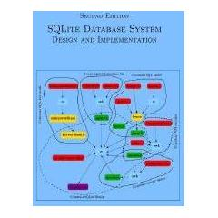
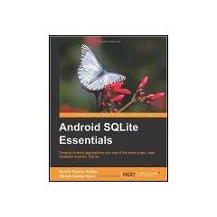
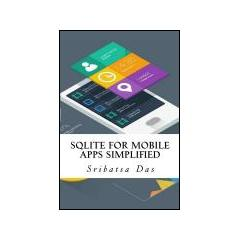
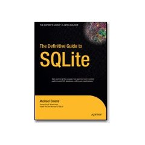
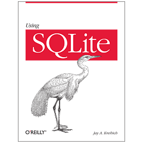
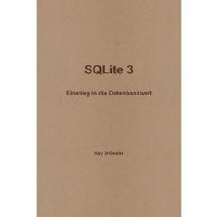
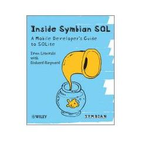
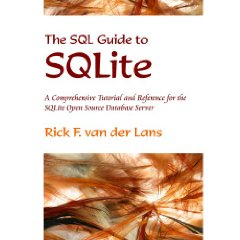
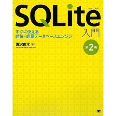
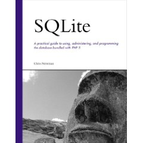

Choose any three.
|
|
Books About SQLite
|  |
SQLite Database System Design and Implementation (2015)
Author: Sibsankar Haldar This book provides a comprehensive description of SQLite database system. It describes design principles, engineering trade-offs, implementation issues, and operations of SQLite. |
|  |
Android SQLite Essentials (2014)
Authors: Sunny Kumar Aditya and Vikash Kumar Karn Android SQLite Essentials focuses on the core concepts behind building database-driven applications. This book covers the basic and advanced topics with equivalent simplicity and detail, in order to enable readers to quickly grasp and implement the concepts to build an application database. This book takes a hands-on, example-based approach to help readers understand the core topics of SQLite and Android database-driven applications. This book focuses on providing you with latent as well as widespread knowledge about practices and approaches towards development in an easily understandable manner. |
|  |
SQLite for Mobile Apps Simplified (2014)
Author: Sribatsa Das SQLite for Mobile Apps Simplified is devoted to presenting approach and implementation methodology for using SQLite database in mobile apps. It presents step-by-step examples to create schema, execute transactions and access data from Android, BlackBerry and iOS applications. In addition, it presents ADB Shell and SQLite command-line shell from ADB Shell to access the SQLite Database created by the Android apps. For BlackBerry and iOS application, the book presents ways to access the data using the command line shell. |
|  |
The Definitive Guide to SQLite (2nd edition, 2010)
Authors: Mike Owens and Grant Allen Outside of the world of enterprise computing, there is one database that enables a huge range of software and hardware to flex relational database capabilities, without the baggage and cost of traditional database management systems. That database is SQLite - an embeddable database with an amazingly small footprint, yet able to handle databases of enormous size. SQLite comes equipped with an array of powerful features available through a host of programming and development environments. It is supported by languages such as C, Java, Perl, PHP, Python, Ruby, TCL, and more. The Definitive Guide to SQLite, Second Edition is devoted to complete coverage of the latest version of this powerful database. It offers a thorough overview of SQLite\u2019s capabilities and APIs. The book also uses SQLite as the basis for helping newcomers make their first foray into database development. In only a short time you can be writing programs as diverse as a server-side browser plug-in or the next great iPhone or Android application! |
 |
Using SQLite (2010)
Author: Jay A. Kreibich Developers, take note: databases aren't just for the IS group any more. You can build database-backed applications for the desktop, Web, embedded systems, or operating systems without linking to heavy-duty client-server databases such as Oracle and MySQL. This book shows how you to use SQLite, a small and lightweight database that you can build right into your application during development. Applications that handle data have an enormous advantage today, and with SQLite, you'll discover how to develop a database-backed application that remains manageable in size and complexity. This book guides you every step of the way. You'll get a crash course in data modeling, become familiar with SQLite's dialect of the SQL database language, and learn how you to work with SQLite using either a scripting language or a C-based language, such as C# or Objective C.Now, even relatively small and nimble applications can be a part of the data revolution. Using SQLite shows you how. |
 |
SQLite 3 - Einstieg in die Datenbankwelt (2010)
Author: Key Droessler Die Datenbanksprache SQL ( Structured Query Language ) wird in Datenbanken zur Definition, Manipulation, Sicherung, aber hauptsaechlich zur Abfrage von Daten aus der Datenbank eingesetzt. Unabhaengig vom Betriebssystem oder aufwendigen, benutzerfreundlichen, graphischen Oberflaechen bleibt die Logik aber immer gleich.SQLite ist eine freie Desktop-Datenbank, sie kostet nichts, ist fuer viele Betriebssysteme verfuegbar, schnell heruntergeladen und installiert und auf das Notwendigste reduziert. Fuer den Einsteiger sind das die besten Voraussetzungen, ohne viel Aufwand schnell in die Welt der Datenbanken und Datenbanksprache reinzuschnuppern.Wer nach den Uebungen aber auf den Geschmack gekommen ist, hat schon den groessten Teil an Datenbanken und SQL gelernt, denn alles Besprochene ist Wissen, welches auch auf jedes andere der vielen Datenbanken grundlegend anwendbar ist. Nun koennen Sie auf die richtig Grossen zugehen, vom grossen Fachbuch bis zum riesigen Datenbanksystem. |
|  |
Inside Symbian SQL (2010)Authors: Ivan Litovski & Richard Maynard This is the definitive reference book on the Symbian SQL database which is based on SQLite. The authors (both members of the Symbian engineering team responsible for the implementation of the code) show you how to design code and ease migration from an internal and external point of view, plus they reveal the dos and don'ts of writing high-performance database applications. Packed with resources and sample code, this timely book reveals how to design and tune applications that use the Symbian SQL framework to ultimately improve performance. With its sample code and insider expertise, this text has everything you need to keep you ahead of the curve. |
|  |
The SQL Guide to SQLite (2009)Author: Rick F. van der Lans SQLite is a small, fast, embeddable, SQL-based database server. It is easy to install, needs no management, and is open source. This book describes SQLite in detail. With hundreds of examples, plus a proven approach and structure, the book teaches you how to use SQLite efficiently and effectively. It contains a complete description of the SQL dialect as implemented in SQLite version 3.6. The book can be seen as a tutorial and a reference book. Source code for the numerous SQL examples and exercises included in this book can be downloaded from www.r20.nl. |
|  |
An Introduction to SQLite - 2nd Edition (2009)Author: Naoki Nishizawa This text is written in fluent Japanese specifically for a Japanese audience. This is the second edition of the book - the first edition was published in 2005. |
|
Inside SQLite (2007)
Author: Sibsankar Haldar SQLite is a small, zero-configuration, custom-tailored, embeddable, thread-safe, easily maintainable, transaction-oriented, SQL-based, relational database management system. There is no separate install or setup procedure to initialize SQLite before using it. There is no configuration file. SQLite is open source, and is available in the public domain (for more information on open source, visit http://opensource.org). You can download SQLite source code from its homepage http://www.sqlite.org, compile it using your favorite C compiler, and start using the compiled library. SQLite runs on Linux, Windows, Mac OS X, and a few other operating systems. It has been widely used in low-to-medium tier database applications. This Short Cut discusses design principles, engineering trade-offs, implementation issues, and operations of SQLite. It presents a comprehensive description of all important components of the SQLite engine. |
|  |
SQLite (2004)Author: Chris Newman SQLite is a small, fast, embeddable database. What makes it popular is the combination of the database engine and interface into a single library as well as the ability to store all the data in a single file. Its functionality lies between MySQL and PostgreSQL, however it is faster than both databases. In SQLite, author Chris Newman provides a thorough, practical guide to using, administering and programming this up-and-coming database. If you want to learn about SQLite or about its use in conjunction with PHP this is the book for you. |